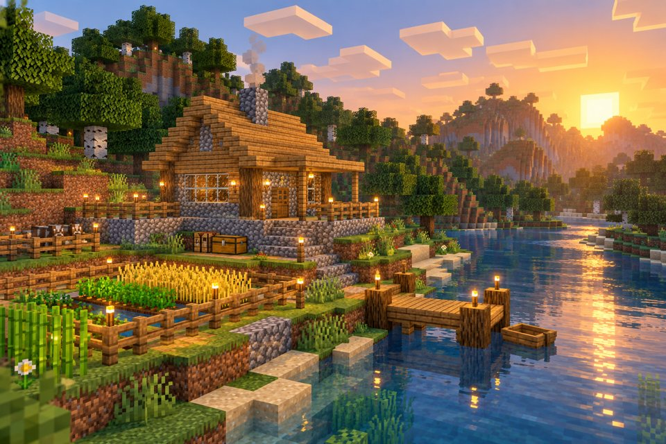
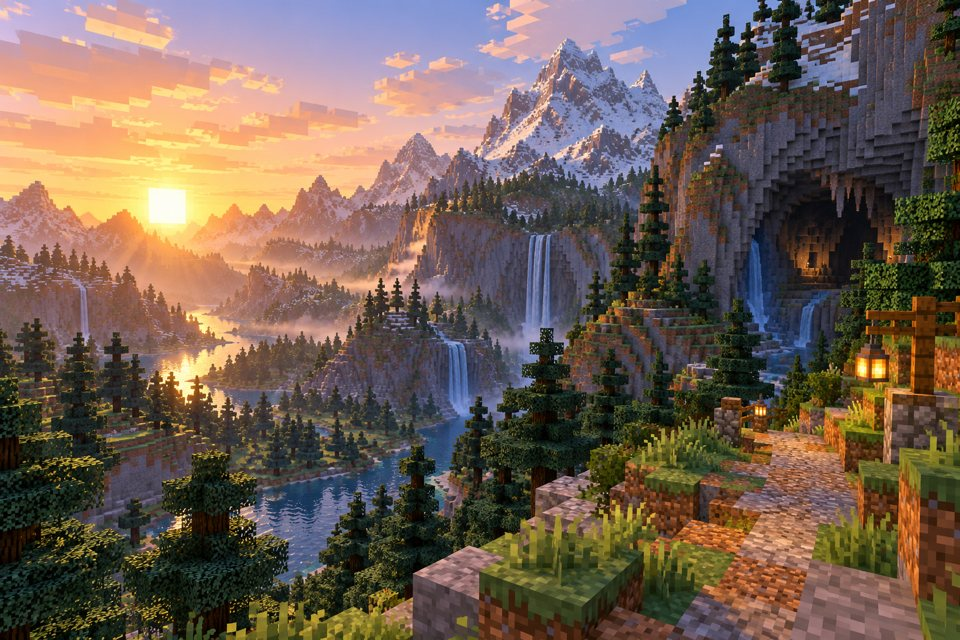

Building a Home Before Nightfall
October 5, 2026 • Jordan Morais-Duke

Starting a new Minecraft world always feels like a race against the sunset. I spent my first day gathering wood, making basic tools, and looking for somewhere safe to settle. A spot beside the river worked out well: it had trees for supplies, open land for a farm, and a view of the hills.
My first shelter was small, but I wanted it to feel like a real home. I mixed oak planks with cobblestone, added windows so I could see what was outside, and put torches around the entrance. The little wheat farm is already useful, and a dock will make it easier to explore the river next. For now, I am happy that I can watch the sun go down without worrying about where I will sleep.
Taking the Long Way Through the Mountains
September 28, 2026 • Jordan Morais-Duke

Once I had enough food and a few spare tools, I left the area around my base to see what else was nearby. I followed the river into a mountain valley and found waterfalls, spruce trees, and a cave tucked into the cliff. The view was worth the climb, especially when the morning light hit the peaks.
I brought home some stone and iron, but the best part of the trip was finding a route I want to visit again. Next time I will bring more torches and spend longer inside the cave. I might even build a small path through the valley so it is easier to reach from home. Exploring is more fun when I can return with ideas for my next build.